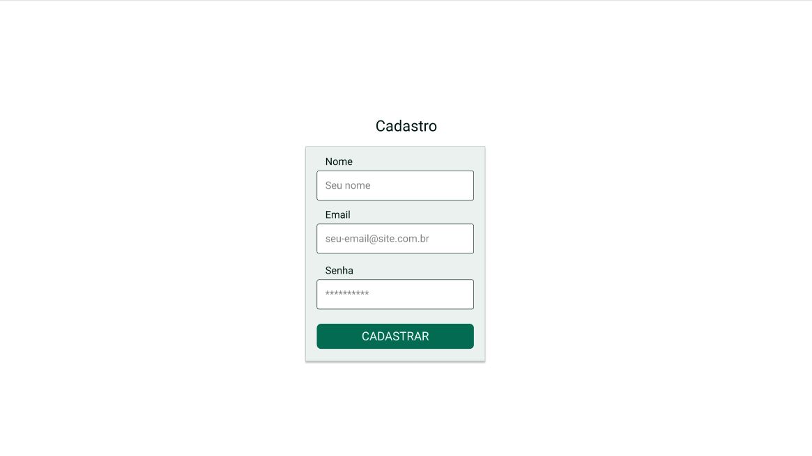
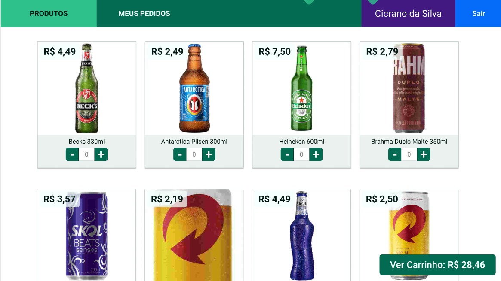
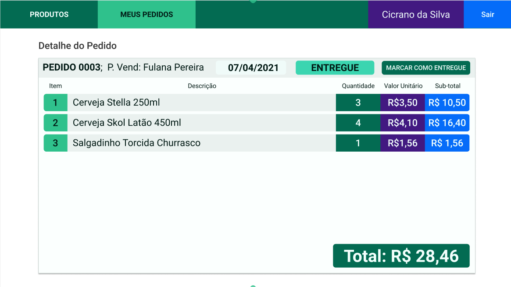
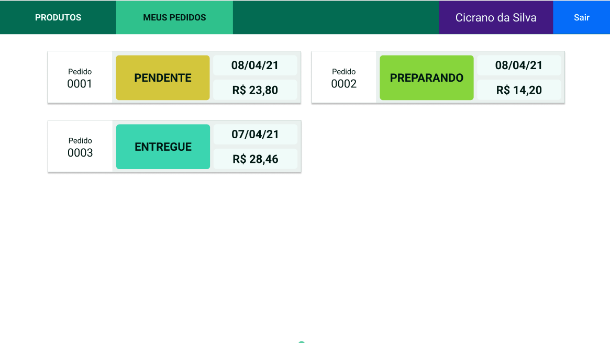

Aqui, é possível visualizar o projeto em pleno funcionamento e explorar suas principais funcionalidades por meio de printscreens. Caso deseje executar o projeto em sua própria máquina, basta selecionar a opção "GITHUB" no menu superior, onde encontrará um tutorial detalhado sobre a instalação do projeto em seu ambiente local. Lembre-se de me contar o que achou do projeto, ficarei imensamente feliz em receber o seu feedback. Ou caso tenha alguma dúvida sobre o projeto, você pode clicar em "DUVIDAS" e me mandar uma mensagem diretamente ou ir em HOME, lá você encontra todas as minhas redes sociais.
Imagine um site onde você pode comprar e vender bebidas de forma fácil e conveniente. Esse é o meu projeto! Aqui, você pode se cadastrar e fazer login para ter acesso a uma ampla variedade de bebidas deliciosas. E o melhor de tudo: você pode adicionar quantas quiser ao seu carrinho de compras! Quando você seleciona os itens que deseja, é direcionado para o seu carrinho, onde pode finalizar a compra. Nos bastidores do site, o banco de dados está trabalhando arduamente para garantir que tudo esteja funcionando sem problemas. Ele salva os dados do seu pedido, incluindo o endereço de entrega, os produtos selecionados e o preço total. Estou usando o MySQL para o modelo relacional do banco de dados. Ele é poderoso e eficiente, garantindo que todas as informações estejam sempre atualizadas e seguras.Abaixo, você pode ver como todo o sistema funciona na prática.
Todo o front-end é servido pelo back-end do projeto, com rotas para cadastro de usuário, requisição de produtos, cadastro de vendas e entre outras. Nessa página eu vou mostrar apenas a aplicação rodando. Para conhecer toda a estrutura do back-end ou até mesmo o código fonte do front-end, recomendo a você a clicar aqui, assim você será redirecionado para o repositório desse projeto no github. Na primeira tela da aplicação o usuário precisa fazer login, mas caso ele não tenha conta, ele pode realizar o cadastro clicando em Ainda não tenho conta
Caso o usuário não tenha conta::
Depois de fazer login no sistema o usuário pode escolher quais e quantos produtos vai comprar
Depois de selecionar todos os produtos na qual quer comprar, o usuário pode clicar em Ver carrinho e seguir para finalização do pedido.
Ao finalizar o pedido, o usuário é redirencionado para a tela de detalhes do pedido.
E por fim mas não menos importante, o usuário tem a tela de todos os pedidos, onde ele pode acompanhar o status do seu pedido.
Caso queira conhecer a aplicação mais a fundo, volto a te convidar para conhecer o repositório do projeto no github, basta clicar aqui